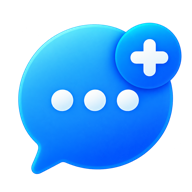

ChatPlus Desktop for Windows
A Windows app for Synology ChatPlus and Synology Chat. Sign in with just your QuickConnect ID; no server addresses to figure out.
Download from GitHub ReleasesInstall
- Run the downloaded
ChatPlus-Desktop_…_x64-setup.exe. - Because this beta isn’t signed by a certificate authority, Windows SmartScreen may say it protected your PC. Click More info, then Run anyway. You only need to do this once.
- Follow the installer. If Microsoft WebView2 is missing, setup downloads it for you.
Set up
- Choose Set up Synology ChatPlus. Using the standard Synology Chat package? Pick the link below it instead.
- Enter your QuickConnect ID, for example
mynas. You can also enter your NAS address, such ashttps://nas.example.com:5001. No DSM alias is needed. - Sign in with your DSM account.
On a laptop, the app finds your NAS again by itself when you move between home and the office. Press Ctrl+R to check right away.
Good to know
- This is a beta for testing. If something breaks, please report an issue.
- Want Discord, Slack, WhatsApp, Messenger or Mattermost too? Turn on Settings › Services › Show other chat services.
- The app lives in the system tray, shows unread counts on the taskbar and sends normal Windows notifications.
- No ads and no tracking. Your messages and password never pass through this app’s developers.